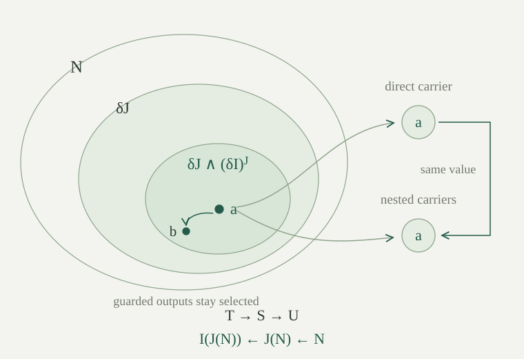

Let \(L\) and \(K\) be first-order languages. An interpretation datum from \(L\) to \(K\), initially with \(L\) having no function symbols, including constants, consists of a \(K\)-formula \(\delta(x)\) and, for every \(n\)-ary relation symbol \(R\) of \(L\), a \(K\)-formula \(\rho_R(x_0,\ldots,x_{n-1})\). Only the displayed variables may be free. There are no parameters unless they have already been named by constants in \(K\). Equality is logical equality and will still mean actual equality; no equivalence relation or quotient is introduced.
For a different construction that replaces equality by a congruence relation and then identifies related objects, see the equality-relation quotient model. The present interpretation keeps equality and selects a domain instead.
The relational translation \(A^{I,\mathrm r}\) keeps equality and falsity, replaces \(R(\bar x)\) by \(\rho_R(\bar x)\), commutes with implication, and uses the following quantifier clause:
Conjunction, disjunction and negation follow their usual classical abbreviations. In particular, the existential translation is equivalent to \(\exists x\,(\delta(x)\land A^{I,\mathrm r})\). Substitution is capture-free: before inserting \(\rho_R\), rename its bound placeholders away from the surrounding context and substitute the actual argument variables for its designated free slots. Equivalently, use scoped formulas, retaining each existing placeholder and appending the quantified placeholder at the end. A zero-argument relation is replaced by a sentence.
Let \(M\) be a nonempty \(K\)-structure for which \(D=\{a\in M:M\models\delta(a)\}\) is nonempty. There is an \(L\)-structure \(I(M)\) with domain \(D\) and relations defined by \(R^{I(M)}(\bar a)\leftrightarrow M\models\rho_R(\bar a)\). For every relational \(L\)-formula \(A\) and assignment \(v\) into \(D\),
where \(\iota:D\hookrightarrow M\) is inclusion.
The domain consists of pairs \((a,h)\) with \(h\) certifying \(\delta(a)\). Equality of these domain elements is equivalent to equality of their underlying values. This defines an actual structure on \(D\); the relation clause has the required finite arity.
Induct on \(A\), keeping the assignment arbitrary. Equality uses injectivity of inclusion, and relation atoms use their defining formulas with capture-free substitution. Falsity and implication have the same truth clauses on both sides. At \(\forall x B\), the left side tests precisely the extensions of \(v\) by elements of \(D\). The right side tests every \(b\in M\), imposing the translated body exactly when \(\delta(b)\) holds. Such a \(b\) is precisely an element of \(D\), so the induction hypothesis identifies the two requirements. This also proves the existential assertion through the classical abbreviation.
Take a nonempty ambient structure and \(\delta(x)=\bot\). What happens to the valid sentence \(\exists x\,x=x\)?
Its translation is equivalent to \(\exists x\,(\bot\land x=x)\), which is false. The sentence itself is true in every allowed first-order structure, since these structures have nonempty domains. The selected set is empty, so it supplies no allowed interpreted structure. A translation using only guards therefore need not preserve validity without the additional nonemptiness requirement.
For a general language \(L\), extend the datum by a \(K\)-formula \(\gamma_f(\bar x,y)\) for each \(n\)-ary function symbol \(f\), with exactly these designated free slots. Write \(\widehat\gamma_f(\bar x,y)=\delta(y)\land\gamma_f(\bar x,y)\). The guarded graph condition for a \(K\)-structure \(M\) is
The output guard is part of this condition. It requires one output in \(D\), even if the raw graph also has outputs outside \(D\). No requirement is imposed for inputs outside \(D\). Arity zero requires a unique selected value for each constant.
A datum is admissible in \(M\) if \(D\ne\varnothing\) and every guarded graph condition holds. Its induced structure \(I(M)\) has domain \(D\), the relations already described, and \(f^{I(M)}(\bar a)\) equal to the unique guarded output. This is well-defined because that output lies in \(D\); uniqueness makes the choice independent of any selection procedure. The whole-domain graph construction is the special case \(\delta=\top\).
For an \(L\)-term \(t\) whose free variables are in a context \(\alpha\), define its guarded term graph \(G_t(\alpha,y)\) recursively:
The fresh tuple \(\bar z\) and output \(y\) occupy separate slots from \(\alpha\); recursive calls relabel their output slot to the appropriate \(z_i\). They never bind a variable already free in the term. Empty conjunctions are true, so the recurrence includes constants. This is the earlier term-graph recurrence with output guards inserted at every node. It is a syntactic construction chosen before the ambient structure or assignment.
If \(I\) is admissible in \(M\), \(v:\alpha\to D\), \(t\) is an \(L\)-term, and \(b\in M\), then
Consequently \(G_t\) has exactly one ambient output on each domain-valued assignment, and that output belongs to \(D\).
Induct on \(t\), universally over the assignment and the proposed output. For a variable, its assigned value is in \(D\), so the output guard and equality hold exactly at that value. For \(f(\bar t)\), each child graph forces \(z_i=\iota(t_i^{I(M)}[v])\) by induction. In particular all child values lie in \(D\), so the guarded graph condition applies to this tuple. It says that the final graph holds exactly at the value defining \(f^{I(M)}\) on these child values. This proves one implication. Conversely choose the child term values as the existential witnesses and use their induction hypotheses and the defining graph of the induced function. The output equality follows in both directions; existence, uniqueness and domain membership follow from the same equality.
This argument uses graph totality only on selected inputs. A theorem requiring totality on all of \(M\) would not justify this step.
The graph translation \(A^I\) replaces atoms by
It preserves falsity and implication and uses \((\forall x A)^I=\forall x(\delta(x)\to A^I)\). Existential quantification consequently agrees in truth with \(\exists x(\delta(x)\land A^I)\). All newly quantified graph outputs use fresh slots. In a scoped formula with parameters \(\alpha\) and \(n\) available placeholders, first regard \(\alpha\sqcup\{0,\ldots,n-1\}\) as the input context. At a universal constructor, rebind exactly the last placeholder, insert its guard, and retain the preceding inputs. This fixes the recurrence at every depth and prevents capture.
For a relational source language, this graph translation and the earlier direct relational translation have the same truth on domain-valued assignments: every variable graph forces its assigned value, so the auxiliary existential outputs disappear semantically. Their formula trees need not be identical.
Suppose \(I\) is admissible in \(M\). For every \(L\)-formula \(A\) and every assignment \(v\) of all its available variables into \(D\),
The same equivalence holds for scoped formulas with an arbitrary tuple of available placeholders, all valued in \(D\).
Induct on the actual scoped formula, quantifying over its free assignment and all available placeholder values. For equality, the two graphs have a common output exactly when the two interpreted term values coincide, by . Inclusion is injective, so this is equality in \(D\). For a relation atom, the child graphs force exactly the interpreted argument tuple; applying \(\rho_R\) is then the definition of the induced relation. This also covers nullary relations. Falsity is unchanged, and implication follows by replacing both child truth values by their induction equivalents.
For a universal formula, retain the preceding assignment and extend it by \(b\in D\). The translated quantifier ranges over ambient \(b\), with the guard admitting precisely these extensions. Rebinding the last placeholder leaves every preceding input unchanged, so the body induction hypothesis applies. Conversely every admitted ambient value defines the domain element \((b,\delta(b))\). Thus all and only the required extensions are tested. This proves the scoped statement and its formula and sentence instances.
The restriction on assignments matters: variables whose ambient values are outside \(D\) have no corresponding assignment in the induced structure. The theorem asserts no comparison at such assignments.
Let \(T\) be an \(L\)-theory and \(S\) a \(K\)-theory. The datum is an interpretation of \(T\) in \(S\) when \(S\) derives, in the existing first-order calculus, the nonemptiness sentence \(\exists x\,\delta(x)\), every universally closed guarded graph condition, and \(\sigma^I\) for every axiom \(\sigma\in T\). A universally closed guarded graph condition says that if all finitely many inputs satisfy \(\delta\), exactly one output satisfies \(\delta(y)\land\gamma_f(\bar x,y)\).
Write \(I:T\rightsquigarrow S\). Its model direction runs oppositely: an \(S\)-model supplies a \(T\)-model on its selected subset. The formulas defining the datum are fixed uniformly, rather than chosen separately for different models. This definition requires actual derivations of the side conditions; simply naming a collection of definable relations is insufficient.
If \(I:T\rightsquigarrow S\), every nonempty \(S\)-model \(M\) induces a nonempty \(T\)-model \(I(M)\). For every \(L\)-sentence \(\sigma\),
Both derivability signs refer to the existing first-order proof calculus.
In an \(S\)-model, soundness makes the derived nonemptiness and guarded graph sentences true. They construct the nonempty induced structure. Soundness also makes every translated axiom true in \(M\). Truth translation therefore makes every original axiom true in \(I(M)\), so it is a model of \(T\).
If \(T\vdash\sigma\), soundness gives \(I(M)\models\sigma\). Truth translation gives \(M\models\sigma^I\). Since this holds in every nonempty model of \(S\), arbitrary-language completeness yields \(S\vdash\sigma^I\). This is an existence proof for a finite native derivation, including for uncountable signatures. It does not specify a computable procedure extracting that proof from the original derivation and interpretation data.
If \(I:T\rightsquigarrow S\) and \(S\) is syntactically consistent, then \(T\) is syntactically consistent. Also, if \(S\) has a nonempty model, then \(T\) has a nonempty model.
The model assertion is the preceding construction. For syntactic consistency, suppose instead \(T\vdash\bot\). Consequence transfer gives \(S\vdash\bot^I\), and falsity is unchanged by translation, so \(S\vdash\bot\), contradicting consistency. The hypotheses include nonemptiness, all guarded graph conditions and all translated axioms. No reverse consistency implication follows from this argument.
Let \(K\) have a unary predicate \(P\) and unary function \(s\), and let \(L\) have one unary function \(f\). Set \(\delta(x)=P(x)\) and \(\gamma_f(x,y)=(y=s(x))\). What conditions on \(S\) make this a datum admissible in every \(S\)-model? Why is nonemptiness alone insufficient?
It suffices that \(S\) derive \(\exists x P(x)\) and \(\forall x(P(x)\to P(s(x)))\). For a selected input \(a\), the value \(s(a)\) is selected and is the unique output satisfying \(y=s(a)\). Thus the guarded graph condition holds in every \(S\)-model; by completeness it is derivable. The induced function is the restriction of \(s\) to \(P\). With \(T\) empty these data interpret \(T\) in \(S\); with additional axioms one must also prove their translations.
For failure of closure take ambient domain \(\{0,1\}\), let \(P=\{0\}\), and let \(s(0)=s(1)=1\). The selected set is nonempty but the selected input \(0\) has no output satisfying both \(P(y)\) and \(y=s(0)\). Hence the raw total function does not induce a function on \(P\). In contrast, on \(\mathbb N\), the choices \(P(n)\leftrightarrow n\ge1\) and \(s(n)=n+1\) satisfy both conditions, giving successor on the positive natural numbers.
Let \(I\) go from \(L\) to \(K\) and \(J\) from \(K\) to \(H\). Their composite datum \(J\circ I\) is specified by
The translations keep the same designated free slots. In an admissible \(H\)-structure \(N\), first form \(J(N)\), whose elements are selected by \(\delta_J\), then form \(I(J(N))\). By truth translation for \(J\), its underlying values are exactly those satisfying the displayed composite domain formula. The conjunction with \(\delta_J\) ensures that the parameter at which \((\delta_I)^J\) is tested lies in the outer domain.
The identity datum on \(L\) has \(\delta(x)=\top\), \(\rho_R(\bar x)=R(\bar x)\), and \(\gamma_f(\bar x,y)=(y=f(\bar x))\). Its induced structure is canonically isomorphic to the original by forgetting the trivial domain certificate.

If \(I:T\rightsquigarrow S\) and \(J:S\rightsquigarrow U\), then \(J\circ I:T\rightsquigarrow U\). In every nonempty \(U\)-model \(N\), the composite induced structure is isomorphic to \(I(J(N))\) by the canonical map retaining the underlying element. For every \(L\)-formula \(A\) and assignment \(v\) in the composite domain,
The identity datum interprets every theory in itself, and its translation is equivalent to the original formula in every structure.
Soundness and the model-transfer theorem let us form \(J(N)\models S\) and then \(I(J(N))\models T\). A composite-domain element is an ambient \(a\) with certificates for \(\delta_J(a)\) and \((\delta_I)^J(a)\). Send it to the outer-domain element \(a\), together with its certificate for \(\delta_I\) in \(J(N)\), supplied by truth translation for \(J\). Conversely forget the nested certificates and translate the inner one back. These maps preserve the underlying value, and are inverses because membership certificates do not change elements of a subset. In particular the composite domain is nonempty.
On a composite input tuple, truth translation for \(J\) identifies the proposed composite raw graph with the graph of \(I\) inside \(J(N)\). Adding the composite output guard restricts outputs to the inner selected domain. The guarded graph theorem for \(I\) gives precisely one such output. This proves composite graph admissibility. The same truth translation identifies the defining relation formulas, so the canonical domain bijection preserves every relation. It preserves functions because the corresponding graph has a unique selected output. It is therefore the stated isomorphism.
Truth translation for the composite, this isomorphism, and truth translation first for \(I\) and then for \(J\) give the displayed equivalence for every domain-valued assignment. In particular the composite translations of \(T\)'s axioms hold in every \(U\)-model. The composite domain and guarded graph sentences also hold in every such model by the construction just given. Completeness supplies their \(U\)-derivations, establishing the claimed interpretation. This asserts equivalence of translated formulas under the stated guards, not literal equality of their syntax trees.
For the identity datum, every input has its ordinary function value as the unique output, and the whole domain is selected. Forgetting the trivial domain certificate preserves functions and relations. Formula induction, or truth translation followed by this isomorphism, proves equivalence of each identity translation with its original. Consequently the side conditions are valid and every translated axiom follows from its original axiom; completeness gives the required native proofs. Thus the identity datum interprets any theory in itself.